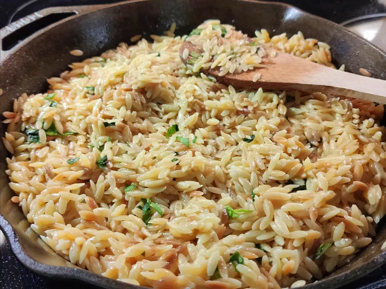

← Home
Orzo with Parmesan and Basil

Description
This Parmesan orzo is a simple recipe that everyone loves. For a quick Mediterranean macaroni and cheese, omit the basil. It is easily doubled, too!
Ingredients
2 tablespoons butter
- 1 cup uncooked orzo pasta
- 1 (14.5 ounce) can chicken broth
- ½ cup grated Parmesan cheese
- ¼ cup chopped fresh basil
- salt and pepper to taste
- 2 tablespoons chopped fresh basil
Steps
- Melt butter in a heavy skillet over medium-high heat. Stir in orzo and sauté until lightly browned.
- Stir in chicken broth and bring to boil. Cover, reduce heat, and simmer until orzo is tender and liquid is absorbed, 15 to 20 minutes.
- Mix in Parmesan cheese and 1/4 cup chopped basil. Season with salt and pepper. Transfer to a shallow bowl and garnish with remaining basil.